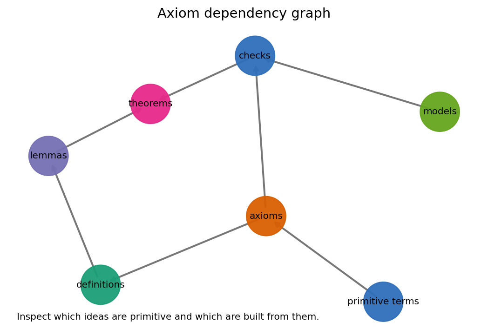
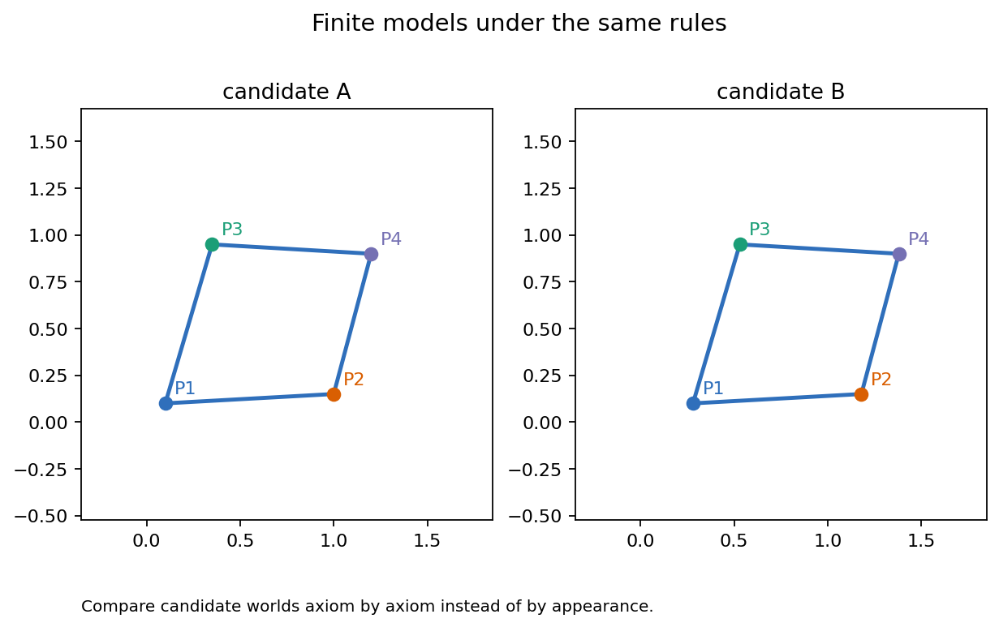
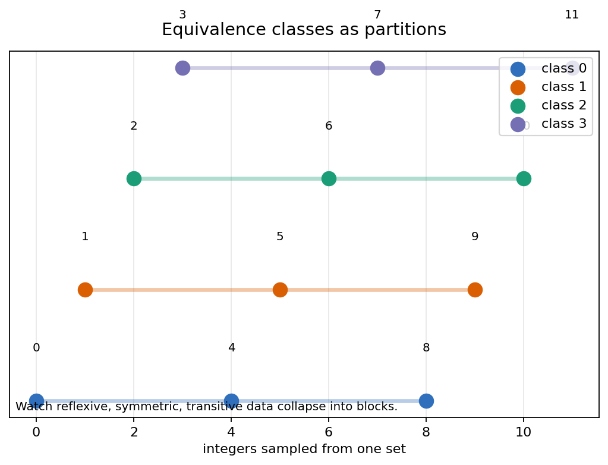
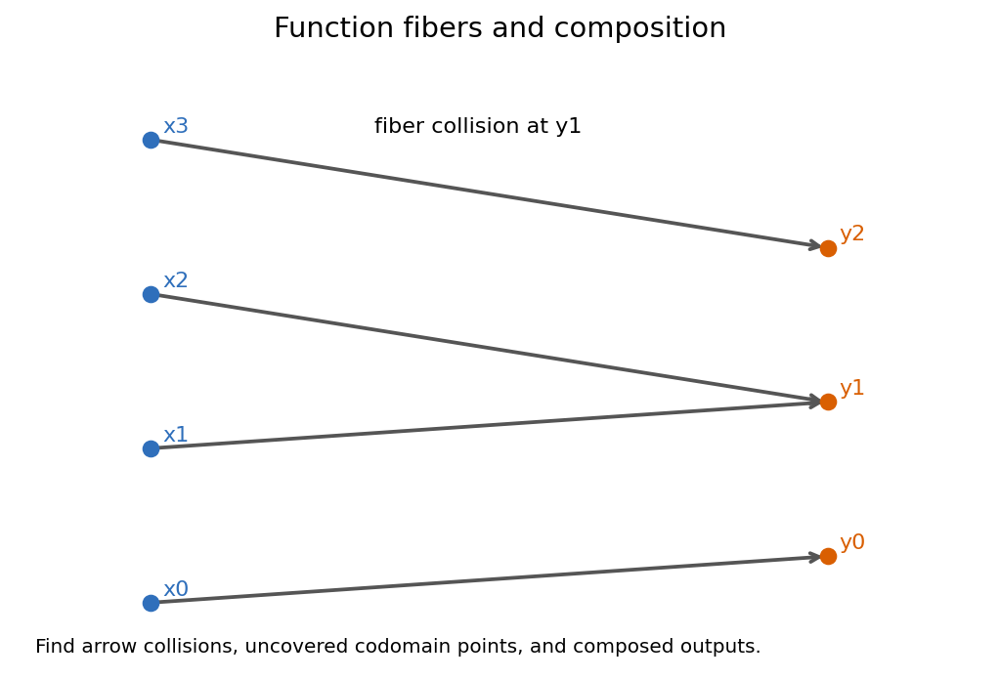

Chapter question: how can undefined objects become a reliable geometry?
A lecture on axioms, models, equivalence relations, and functions as the formal machinery that makes later metric geometry inspectable.
Chapter question: how can undefined objects become a reliable geometry?
Students should leave with a habit: before proving a statement, identify the vocabulary, the active rules, the intended model, and the structure-preserving maps that make the statement meaningful.
Primitive words are terms whose behavior is governed by axioms before a concrete interpretation is selected.
Undefined does not mean vague. It means the word is disciplined by relations, rules, and model tests instead of an informal picture.
A list of allowed relationships among primitive terms. It gives a grammar for reasoning before selecting a particular world.
An interpretation of the primitive words in which every axiom is true. A model is evidence that the rules can coexist.
Replace each axiom by a predicate. The candidate model passes only when all predicates return true under the same interpretation.
model \(M\) satisfies axiom list \(A\) when \(M \vDash A_i\) for every rule \(A_i\)

Words such as point and line enter before formal definitions. Their usable content comes from axioms.
Definitions, lemmas, and theorems should make their dependencies visible so a proof can be audited.
Checks push the theory back into candidate worlds, where abstract claims can be tested for consistency.
Generated artifact: axiom-dependency-graph.png. The deck uses it as a concept map, not as source-text evidence.

Two candidates must be checked against the same primitive vocabulary and the same axioms.
Points may be coordinates, graph nodes, ordered pairs, or something stranger, as long as the rules are respected.
A drawing can suggest a model, but the drawing is not the proof that the interpretation satisfies the axioms.
| Question | Model Check |
|---|---|
| What are the objects? | Interpret primitive terms. |
| What must be true? | Evaluate every axiom. |
\(x\sim x,\quad x\sim y \Rightarrow y\sim x,\quad x\sim y\ \text{and}\ y\sim z \Rightarrow x\sim z\)
An equivalence relation lets later geometry treat objects as the same when a chosen property is all that matters.

The class \([x]\) is the set of all elements equivalent to \(x\), not merely the element \(x\) with a label attached.
The quotient \(S/{\sim}\) is the set of all equivalence classes. It stores blocks as the new objects.
Calculations may choose representatives, but correct conclusions cannot depend on which representative was chosen.
\([x]=[y]\) exactly when \(x\sim y\)

Which codomain points are missed, and which image points receive more than one input?
\(\operatorname{fiber}_f(y)=\{x\in X:f(x)=y\}\)
\((g\circ f)(x)=g(f(x))\)
The input starts in \(X\), moves through \(f\), and then moves through \(g\), even though \(g\circ f\) is written with \(g\) first.
No two distinct inputs collide at one output. The diagram makes collisions visible as merged arrows.
Every declared codomain point is hit. This depends on the codomain, not only on the arrows drawn.
all(ax(M) for ax in axioms)
Model status is a universal claim over the active rules.
reflexive and symmetric and transitive
Equivalence is visible only when all three tests hold.
image = {f(x) for x in X}
Fibers and missed codomain points are computable diagnostics.
Finite checks can expose mistakes and guide conjectures, but the theorem must cover every permitted case.
A diagram can guide intuition, but the model is the interpretation that satisfies the rules, not the picture alone.
A relation with self-links and reversible links can still fail transitivity, so it may not produce valid blocks.
Surjectivity is a statement about the declared codomain. Changing the codomain changes the claim.
The notation \(g\circ f\) means follow \(f\) first and only then apply \(g\).
Given a small incidence table, a relation matrix, and an arrow diagram, decide which one is a model, which one gives a quotient, and which map properties hold.
The rest of the course repeatedly asks: what structure is being preserved, identified, measured, or transported?